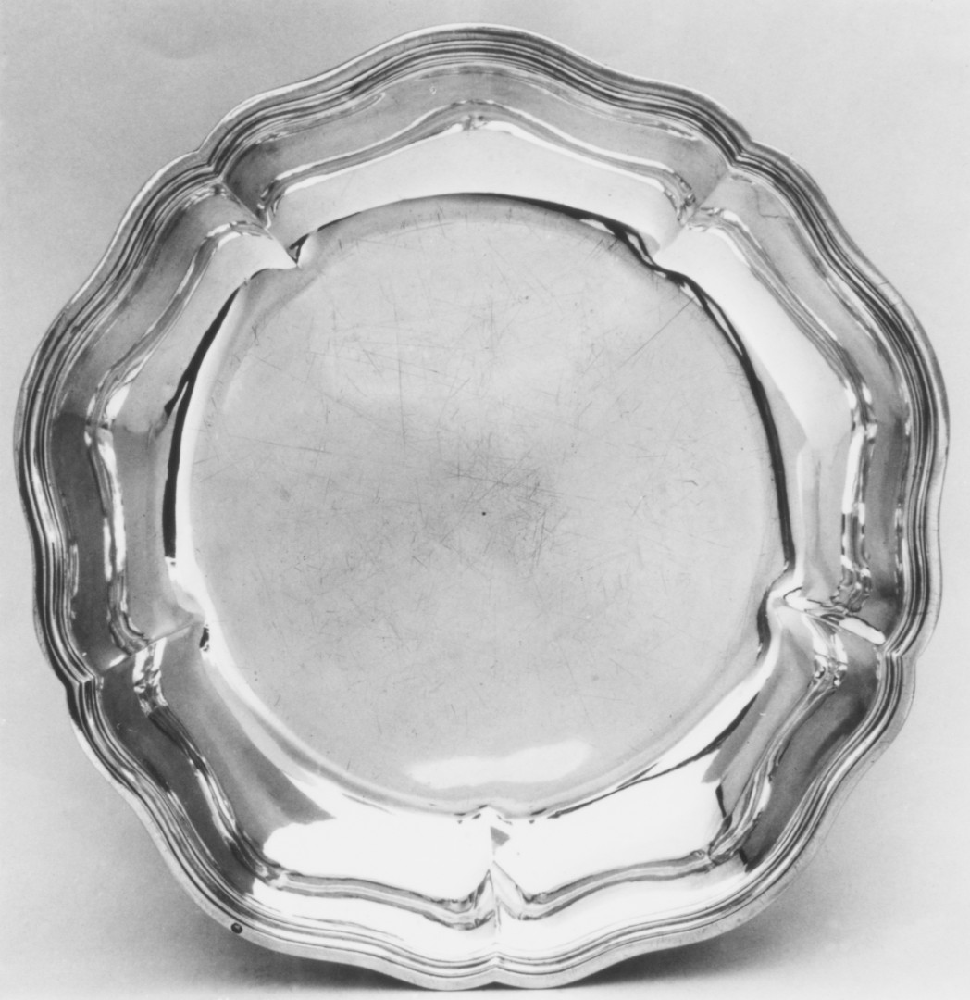

48.187.169Met 200199

record images1 / 1
Overall: 1 3/4 × 11 3/4 in. (4.4 × 29.8 cm)
Two entries. Three record images. The title repeats.

Overall: 1 3/4 × 11 3/4 in. (4.4 × 29.8 cm)

Overall: 1 5/8 × 11 7/8 in. (4.1 × 30.2 cm)
 Additional oblique view in this entry
Additional oblique view in this entryEach entry names one dish “of a pair.” The records share the maker, date, material, and adjacent accession numbers; their listed dimensions differ slightly.
The Met pages do not cross-link these objects. I read them together as the pair. Object 48.187.169 · Object 48.187.170.